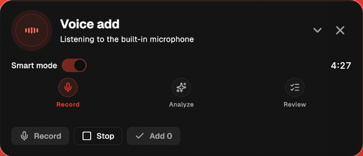

Upcoming Planner
Turn thoughts
into tasks —
and get them done
Voice input creates tasks. Plan them in the Google Calendar you already use. Stay focused with Pomodoro.
Say it before you forget it.

01Voice input
→
02Google Calendar
→
03Pomodoro


Light
Dark